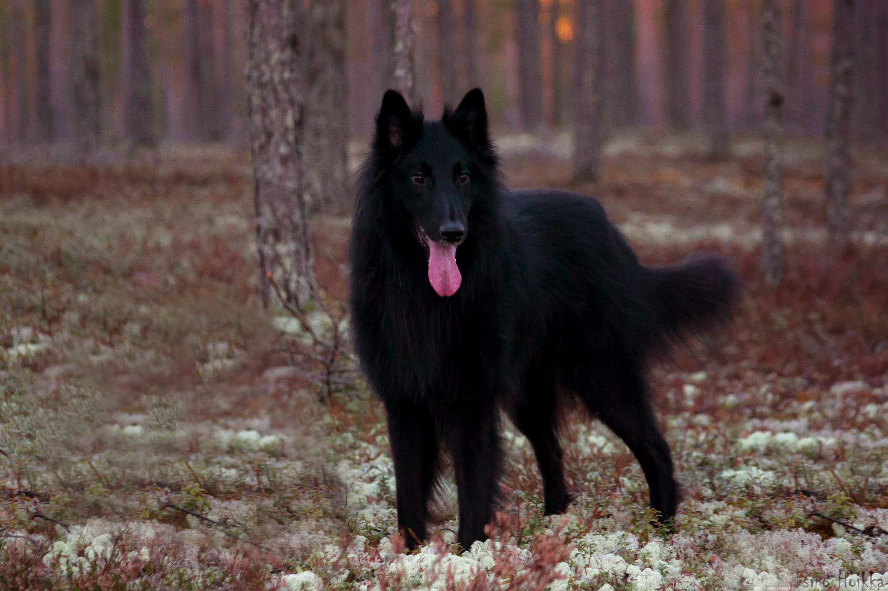
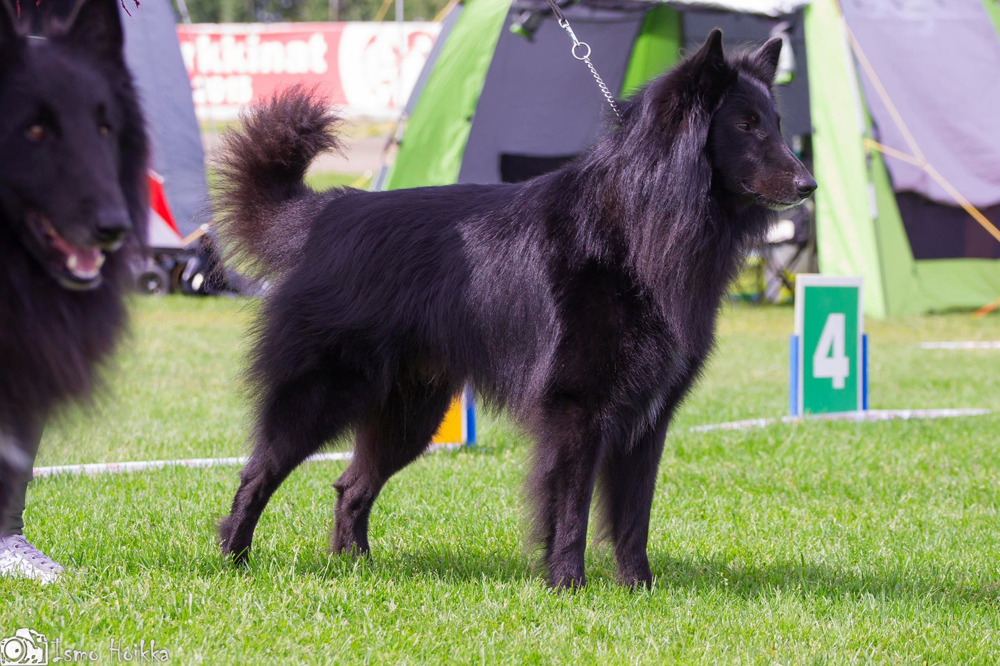
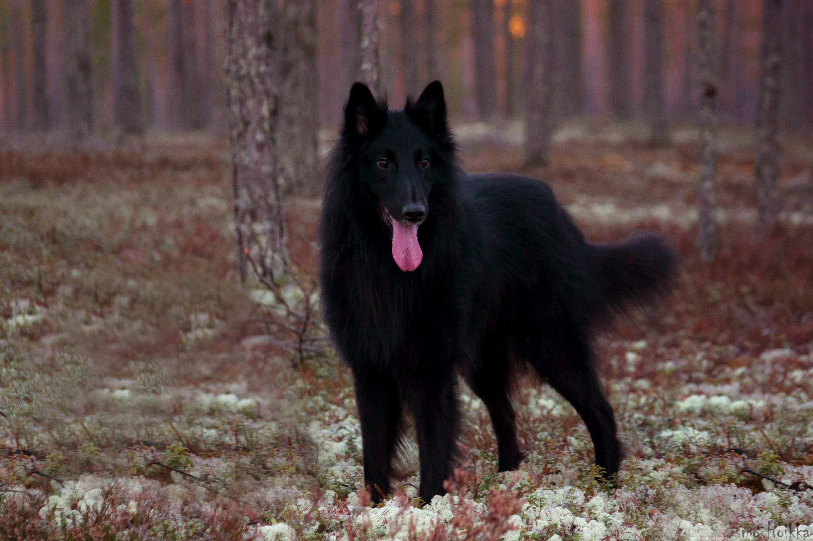
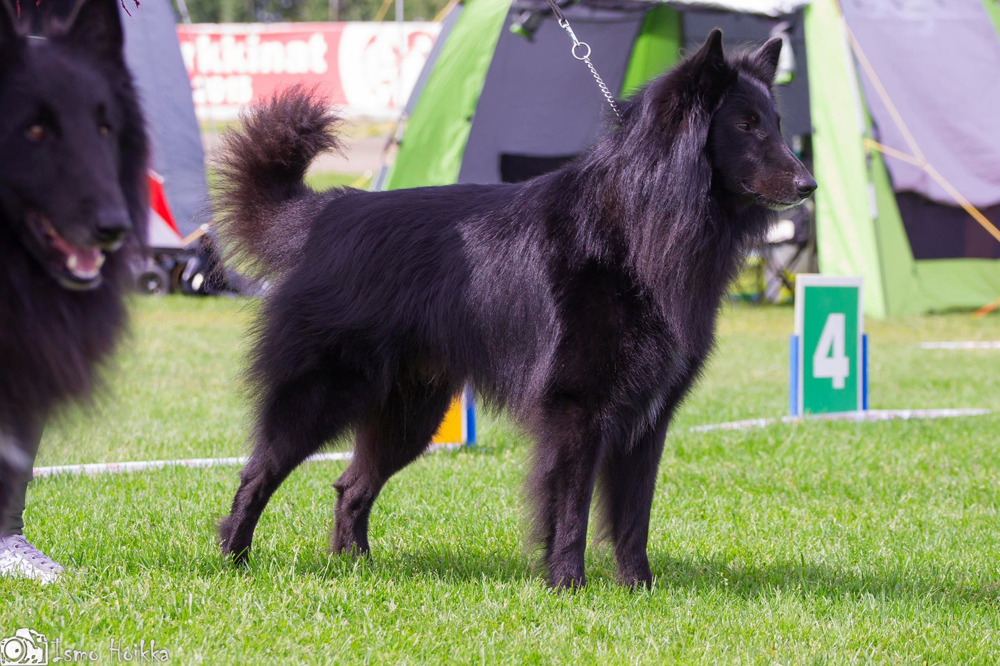

Perustiedot
- Rotu: Belgianpaimenkoira Groenendael
- Syntymäaika: 28.05.2011
- Ikä: 11v
- Syntymäpaikka: Tsekki
- Sukupuoli: Uros
- Lempinimet: Kaapo, Kapsutin, Bamse, Papsu
Harrastukset
Agility, ToKo, näyttelyt, lelujen omiminen ja muiden paimentaminen.
Saavutukset
Näyttelytulokset: SA, ROP, SERT
Luonnetesti: 127 pistettä
Pentueet: Kaksi
Jalkapallon elossapitämisaika: 3 vuotta
Luonne
Pentuikäisenä Capo oli todellinen pikkupiru ja piranja. Vitsailtiin usein,
että laitetaan postimerkki takalistoon ja lähetetään se takaisin Tsekkeihin.
Caposta kasvoi kuitenkin todella kiltti ja miellyttämisenhaluinen koira.
Capo rakastaa leikkimistä ja kaikenlaista yhdessätekemistä. Sillä onkin tapana
mennä helposti ylikierroksille. Leluja se tykkää omia ja leikit jääkin yleensä
lyhyeen, kun siltä ei saa leluja takaisin.
Capo on kaikkien kaveri ja todella
valloittava koira. Se osaa hymyillä ihmismäisesti näyttämällä hampaita,
mikä tekee siitä erikoisen veijarin.
 


